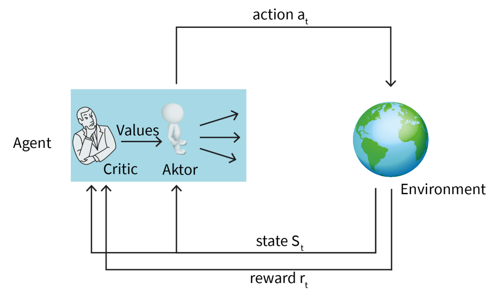
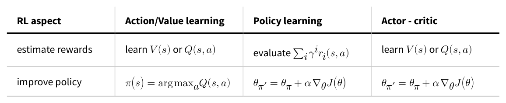

DLMAIRIL01 - Source-derived printable review sheet
Condensed from the same learning note. No additional teaching topics or official examination questions. Formulas and fonts render offline.
Actor-critic combines direct policy updates with learned value feedback; advantage centers action quality relative to state value, and the source's synchronous, asynchronous, entropy and surrogate-objective extensions address efficiency, variance and stability.
| Term | Meaning |
|---|---|
| Actor | Learns the parameterized action-selection policy. |
| Critic | Learns a value estimate used to guide policy updates. |
| Actor/critic learning rates | Separate step sizes for policy and value parameters. |
| Synchronous / asynchronous | Coordinated updates / updates reaching agents at differing times. |
| Advantage | Action value minus the baseline state value. |
| Entropy objective | A randomness-related exploration objective named in the SAC discussion. |
| Surrogate objective | A replacement optimization objective used to control policy changes. |
Actor improves the policy; critic estimates its values. A2C is synchronous, A3C asynchronous; SAC and PPO are introduced at the qualitative level supplied by the book.
The book's coach analogy captures the two roles: an athlete acts and adjusts technique, while the coach estimates what is working and supplies feedback. In the source classroom analogy, V is class-average performance and advantage is performance relative to that average.
Study these with the detailed explanation in the linked Obsidian note.


Answer before expanding. Open the answers before printing to include them.
The actor learns the policy; the critic learns values used to guide that policy.
The critic is estimated from experience rather than evaluated from a fully known model.
The successor action is chosen by the current policy, as in SARSA.
No; the source uses separate rates.
Action value minus state value.
Reward plus discounted next-state value minus current-state value.
A2C is synchronous and A3C asynchronous.
An entropy-related objective encouraging exploration.
Use a surrogate objective with clipping or a divergence-based penalty to avoid overly large policy changes.
Learning note: 04_unit_4_q_learning/07_actor_critic_learning.
Course book pp. 162-168. Printed page + 2 = PDF viewer page. Personal-study use.